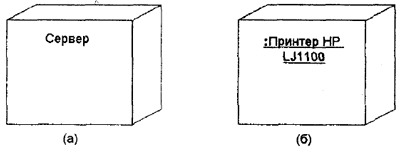
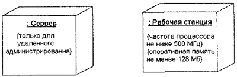
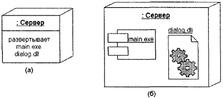
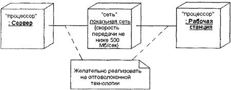
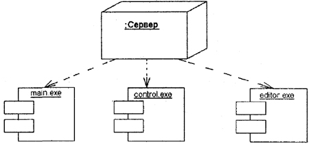
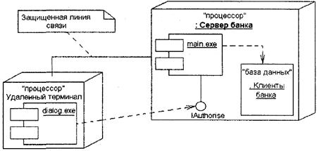
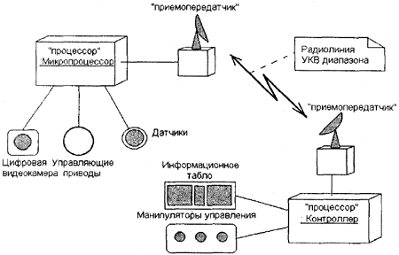

Физическое представление программной системы не может быть полным, если отсутствует информация о том, на какой платформе и на каких вычислительных средствах она реализована. Конечно, если разрабатывается простая программа, которая может выполняться локально на компьютере пользователя, не задействуя никаких периферийных устройств и ресурсов, то в этом случае нет необходимости в разработке дополнительных диаграмм. Однако при разработке корпоративных приложений ситуация представляется совсем по-другому.
Во-первых, сложные программные системы могут реализовываться в сетевом варианте на различных вычислительных платформах и технологиях доступа к распределенным базам данных. Наличие локальной корпоративной сети требует решения целого комплекса дополнительных задач по рациональному размещению компонентов по узлам этой сети, что определяет общую производительность программной системы.
Во-вторых, интеграция программной системы с Интернетом определяет необходимость решения дополнительных вопросов при проектировании системы, таких как обеспечение безопасности, криптозащищенности и устойчивости доступа к информации для корпоративных клиентов. Эти аспекты в немалой степени зависят от реализации проекта в форме физически существующих узлов системы, таких как серверы, рабочие станции, брандмауэры, каналы связи и хранилища данных.
Наконец, технологии доступа и манипулирования данными в рамках общей схемы "клиент-сервер" также требуют размещения больших баз данных в различных сегментах корпоративной сети, их резервного копирования, архивирования, кэширования для обеспечения необходимой производительности системы в целом. Эти аспекты также требуют визуального представления с целью спецификации программных и технологических особенностей реализации распределенных архитектур.
Как было отмечено в главе 10, первой из диаграмм физического представления является диаграмма компонентов. Второй формой физического представления программной системы является диаграмма развертывания (синоним — диаграмма размещения). Она применяется для представления общей конфигурации и топологии распределенной программной системы и содержит распределение компонентов по отдельным узлам системы. Кроме того, диаграмма развертывания показывает наличие физических соединений — маршрутов передачи информации между аппаратными устройствами, задействованными в реализации системы.
Диаграмма развертывания предназначена для визуализации элементов и компонентов программы, существующих лишь на этапе ее исполнения (runtime). При этом представляются только компоненты-экземпляры программы, являющиеся исполнимыми файлами или динамическими библиотеками. Те компоненты, которые не используются на этапе исполнения, на диаграмме развертывания не показываются. Так, компоненты с исходными текстами программ могут присутствовать только на диаграмме компонентов. На диаграмме развертывания они не указываются.
Диаграмма развертывания содержит графические изображения процессоров, устройств, процессов и связей между ними. В отличие от диаграмм логического представления, диаграмма развертывания является единой для системы в целом, поскольку должна всецело отражать особенности ее реализации. Эта диаграмма, по сути, завершает процесс ООАП для конкретной программной системы и ее разработка, как правило, является последним этапом спецификации модели.
Итак, перечислим цели, преследуемые при разработке диаграммы развертывания:
Для обеспечения этих требований диаграмма развертывания разрабатывается совместно системными аналитиками, сетевыми инженерами и системотехниками. Далее рассмотрим отдельные элементы, из которых состоят диаграммы развертывания.
Узел (node) представляет собой некоторый физически существующий элемент системы, обладающий некоторым вычислительным ресурсом. В качестве вычислительного ресурса узла может рассматриваться наличие по меньшей мере некоторого объема электронной или магнитооптической памяти и/или процессора. В последней версии языка UML понятие узла расширено и может включать в себя не только вычислительные устройства (процессоры), но и другие механические или электронные устройства, такие как датчики, принтеры, модемы, цифровые камеры, сканеры и манипуляторы.
Примечание
Возможность включения людей (персонала) в понятие узла позволяет создавать средствами языка UML модели самых различных систем, включая бизнес-процессы и технические комплексы. Действительно, реализация бизнес-логики предприятия требует рассматривать в качестве узлов системы организационные подразделения, состоящие из персонала. Автоматизация управления техническими комплексами также требует рассмотрения в качестве самостоятельного элемента человека-оператора, способного принимать решения в нештатных ситуациях и нести ответственность за возможные последствия этих решений.
Графически на диаграмме развертывания узел изображается в форме трехмерного куба (строго говоря, псевдотрехмерного прямоугольного параллелепипеда). Узел имеет собственное имя, которое указывается внутри этого графического символа. Сами узлы могут представляться как в качестве типов (рис. 11.1, а), так и в качестве экземпляров (рис. 11.1, б).
Рис. 11.1. Графическое изображение узла на диаграмме развертывания
В первом случае имя узла записывается без подчеркивания и начинается с заглавной буквы. Во втором имя узла-экземпляра записывается в виде <имя узла ':' имя типа узла>. Имя типа узла указывает на некоторую разновидность узлов, присутствующих в модели системы.
Например, аппаратная часть системы может состоять из нескольких персональных компьютеров, каждый из которых соответствует отдельному узлу-экземпляру в модели. Однако все эти узлы-экземпляры относятся к одному типу узлов, а именно узлу с именем типа "Персональный компьютер". Так, на представленном выше рисунке (рис. 11.1, а) узел с именем "Сервер" относится к общему типу и никак не конкретизируется. Второй же узел (рис. 11.1, б) является анонимным узлом-экземпляром конкретной модели принтера.
Так же, как и на диаграмме компонентов, изображения узлов могут расширяться, чтобы включить некоторую дополнительную информацию о спецификации узла. Если дополнительная информация относится к имени узла, то она записывается под этим именем в форме помеченного значения (рис. 11.2).
Рис. 11.2. Графическое изображение узла-экземпляра с дополнительной информацией в форме помеченного значения
Если необходимо явно указать компоненты, которые размещаются на отдельном узле, то это можно сделать двумя способами. Первый из них позволяет разделить графический символ узла на две секции горизонтальной линией. В верхней секции записывают имя узла, а в нижней секции — размещенные на этом узле компоненты (рис. 11.3, а).
Второй способ разрешает показывать на диаграмме развертывания узлы с вложенными изображениями компонентов (рис. 11.3, б). Важно помнить, что в качестве таких вложенных компонентов могут выступать только исполняемые компоненты.
Рис. 11.3. Варианты графического изображения узлов-экземпляров с размещаемыми на них компонентами
В качестве дополнения к имени узла могут использоваться различные стереотипы, которые явно специфицируют назначение этого узла. Хотя в языке UML стереотипы для узлов не определены, в литературе встречаются следующие их варианты: "процессор", "датчик", "модем", "сеть", "консоль" и др., которые самостоятельно могут быть определены разработчиком. Более того, на диаграммах развертывания допускаются специальные обозначения для различных физических устройств, графическое изображение которых проясняет назначение или выполняемые устройством функции.
Примечание
Говоря о дополнительных графических изображениях для узлов диаграммы развертывания, прежде всего имеют в виду наглядность их представления. Например, процессор можно изобразить как в виде общего узла (рис. 11.1), так и в форме изображения внешнего вида компьютера. Соответственно, консоль может быть изображена в виде клавиатуры. В любом из этих случаев разработчик должен обладать, в дополнение к основным, еще и художественными способностями.
Кроме собственно изображений узлов на диаграмме развертывания указываются отношения между ними. В качестве отношений выступают физические соединения между узлами и зависимости между узлами и компонентами, изображения которых тоже могут присутствовать на диаграммах развертывания.
Соединения являются разновидностью ассоциации и изображаются отрезками линий без стрелок. Наличие такой линии указывает на необходимость организации физического канала для обмена информацией между соответствующими узлами. Характер соединения может быть дополнительно специфицирован примечанием, помеченным значением или ограничением. Так, на представленном ниже фрагменте диаграммы развертывания (рис. 11.4) явно определены не только требования к скорости передачи данных в локальной сети с помощью помеченного значения, но и рекомендации по технологии физической реализации соединений в форме примечания.
Рис. 11.4. Фрагмент диаграммы развертывания с соединениями меходу узлами
Кроме соединений на диаграмме развертывания могут присутствовать отношения зависимости между узлом и развернутыми на нем компонентами. Подобный способ является альтернативой вложенному изображению компонентов внутри символа узла, что не всегда удобно, поскольку делает этот символ излишне объемным. Поэтому при большом количестве развернутых на,узле компонентов соответствующую информацию можно представить в форме отношения зависимости (рис. 11.5).
Диаграммы развертывания могут иметь более сложную структуру, включающую вложенные компоненты, интерфейсы и другие аппаратные устройства. На изображенной ниже диаграмме развертывания (рис. 11.6) представлен фрагмент физического представления системы удаленного обслуживания клиентов банка. Узлами этой системы являются удаленный терминал (узел-тип) и сервер банка (узел-экземпляр).
Рис. 11.5. Диаграмма развертывания с отношением зависимости между узлом и развернутыми на нем компонентами
Рис. 11.6. Диаграмма развертывания для системы удаленного обслуживания клиентов банка
На этой диаграмме развертывания указана зависимость компонента реализации диалога "dialog.exe" на удаленном терминале от интерфейса lAuthorise, реализованного компонентом "main.exe", который, в свою очередь, развернут на анонимном узле-экземпляре "Сервер банка". Последний зависит от компонента базы данных "Клиенты банка", который развернут на этом же узле.
Примечание указывает на необходимость использования защищенной линии связи для обмена данными в данной системе. Другой вариант записи этой информации заключается в дополнении диаграммы узлом со стереотипом "закрытая сеть".
Разработка так называемых встроенных систем предполагает не только создание программного кода, но и согласование между собой всех аппаратных средств и механических устройств. В качестве примера рассмотрим фрагмент модели управления удаленным механическим средством типа транспортной платформы. Такая платформа предназначена для перемещения в агрессивных средах, где присутствие человека невозможно в силу целого ряда физических причин.
Транспортная платформа оснащается собственным микропроцессором, цифровой видеокамерой, датчиками температуры и местоположения, а также управляющими приводами для изменения направления и скорости перемещения платформы. Управляющая и телеметрическая информация от платформы по радиолинии передается в центр управления, оснащенный управляющим компьютером, манипуляторами управления и большим информационным табло.
На микропроцессоре платформы развернуты программные компоненты для реализации простейших управляющих воздействий на приводы, что позволяет дискретно изменять направление и скорость перемещения платформы. На компьютере центра управления развернуты программные компоненты анализа телеметрической информации, характеризующей состояние отдельных устройств' платформы, а также реализованы алгоритмы управления перемещением платформы в целом.
Вариант физического представления этой транспортной системы показан на следующей диаграмме развертывания (рис. 11.7).
Рис. 11.7. Диаграмма развертывания для модели системы управления транспортной платформой
Данная диаграмма содержит самую общую информацию о развертывании рассматриваемой системы и в последующем может быть детализирована при разработке собственно программных компонентов управления. Как видно из рисунка, при разработке этой диаграммы развертывания использованы дополнительный стереотип "приемопередатчик", который отсутствует в описании языка UML, и специальные изображения для отдельных аппаратных и механических устройств.
11.3. Рекомендации по построению диаграммы развертывания
Разработка диаграммы развертывания начинается с идентификации всех аппаратных, механических и других типов устройств, которые необходимы для выполнения системой всех своих функций. В первую очередь специфицируются вычислительные узлы системы, обладающие памятью и/или процессором. При этом используются имеющиеся в языке UML стереотипы, а в случае отсутствия последних, разработчики могут определить новые стереотипы. Отдельные требования к составу аппаратных средств могут быть заданы в форме ограничений, свойств и помеченных значений.
Дальнейшее построение диаграммы развертывания связано с размещением всех исполняемых компонентов диаграммы по узлам системы. Если отдельные исполняемые компоненты оказались не размещенными, то подобная ситуация должна быть исключена введением в модель дополнительных узлов, содержащих процессор и память.
При разработке простых программ, которые исполняются локально на одном компьютере, так же как и в случае диаграммы компонентов, необходимость в диаграмме развертывания может вообще отсутствовать. В более сложных ситуациях диаграмма развертывания строится для таких приложений, как:
Как правило, разработка диаграммы развертывания осуществляется на завершающем этапе ООАП, что характеризует окончание фазы проектирования физического представления. С другой стороны, диаграмма развертывания может строиться для анализа существующей системы с целью ее последующего анализа и модификации. При этом анализ предполагает разработку этой диаграммы на его начальных этапах, что характеризует общее направление анализа от физического представления к логическому.
При моделировании бизнес-процессов диаграмма развертывания, кроме компьютеров корпоративной сети, может содержать в качестве узлов различные средства оргтехники (факсимильные устройства, многоканальные телефонные станции, множительные аппараты, экраны для презентаций и др.). При этом каждое из подобных устройств может функционировать как автономно, так и в составе корпоративной сети.
Если необходимо включить в модель ресурсы Интернета, то на диаграмме развертывания Интернет обозначается в форме "облачка" с соответствующим именем. Строго говоря, подобное обозначение не специфицировано в языке UML, однако оно часто используется при разработке моделей распределенных систем.
В заключение следует отметить одно немаловажное обстоятельство, характерное для разработки всех канонических диаграмм. Хотя в языке UML определена графическая нотация для всех элементов канонических диаграмм, способы графического изображения отдельных инструментальных средств имеют свои специфические особенности. Применение того или иного инструментального CASE-средства накладывает определенные ограничения на визуализацию моделей программных систем. Речь идет о том, что некоторые элементы языка UML могут вообще отсутствовать в CASE-средствах. Выход из подобной ситуации может быть связан либо с выбором другого инструментария, поддерживающего последние версии языка UML, либо упрощении модели на основе ее типизации.
В главе 12 некоторые из этих аспектов будут рассмотрены более подробно на примере CASE-средства Rational Rose 98/981.
| Каталог | Индекс раздела | Оглавление |